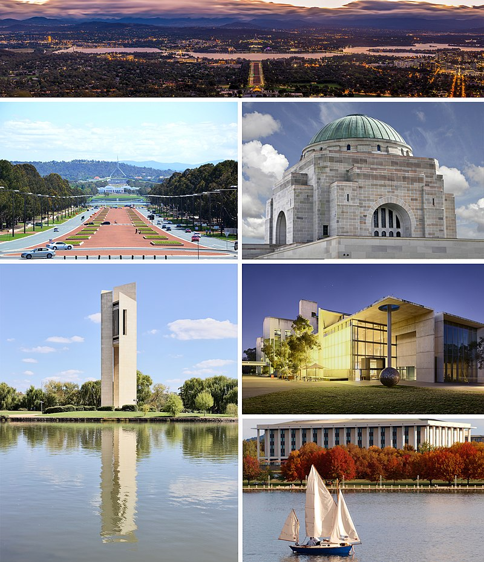

Австралия
Австралия — государство в Южном полушарии, занимающее одноимённый материк, остров Тасмания и несколько других островов Индийского и Тихого океанов; является шестым государством по площади в мире. К северу от Австралийского Союза расположены Восточный Тимор, Индонезия и Папуа — Новая Гвинея, к северо-востоку — Вануату, Новая Каледония и Соломоновы Острова, к юго-востоку — Новая Зеландия. От главного острова Папуа — Новой Гвинеи материковая часть Австралийского Союза отделена Торресовым проливом минимальной шириной около 150 км, а расстояние от австралийского острова Боигу до Папуа — Новой Гвинеи составляет около 5 километров. Население на 31 декабря 2018 года оценивалось в 25 180 200 человек, большинство из которых проживает в городах на восточном побережье.
Австралия является одной из развитых стран, будучи тринадцатой по размеру экономикой в мире, и имеет шестое место в мире по ВВП в расчёте на душу населения. Военные расходы Австралии являются двенадцатыми по размеру в мире. Со вторым по величине индексом развития человеческого потенциала Австралия занимает высокое место во многих сферах, таких как качество жизни, здоровье, образование, экономическая свобода, защита гражданских свобод и политических прав. Австралия является членом G20, ОЭСР, ВТО, АТЭС, ООН, Содружества наций, АНЗЮСа, АУКУСа и Форума тихоокеанских островов.
Столица
Канберра — столица Австралии, крупнейший внутренний город страны. Население Канберры с городом-спутником Куинбиан как городской агломерации Канберра — Куинбиан составляет 432 141 человек (2016). Город является административным центром Австралийской столичной территории, которая включает в себя также небольшую сельскохозяйственную зону и национальный парк Намаджи. В 250 км к северо-востоку от Канберры находится Сидней, а в 450 км к юго-западу — Мельбурн.
Административно-территориальное деление
|
№ |
Назавание |
Тип адм. ед. |
Столица |
Население чел.(2011) |
Площадь км |
|---|---|---|---|---|---|
|
1 |
Австралийская столичная территория |
территория |
Канберра |
357 219 |
2358 |
|
2 |
Виктория |
штат |
Мельбурн |
5 354 040 |
227 416 |
|
3 |
Западная Австралия |